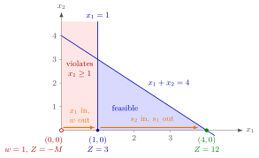

Big-M Method¶
Method¶
Input: a linear program in standard form , , in which some right-hand sides are negative, so that the slack basis is infeasible. Write for the -th row of .
- Add a slack variable to every constraint.
- For every row with , also subtract an artificial variable , giving , and add the penalty to the objective, where is a large constant.
- Multiply each such row by : . Now has a unit column and is the basic variable of row , with value . Rows with keep as basic variable.
- In the objective row , subtract times each artificial row, so that every gets reduced cost . The structural variables are nonbasic, and the tableau is a feasible starting tableau.
- Run the revised simplex algorithm (or its tableau version), comparing expressions in as if were larger than any number that occurs.
- Read off the outcome:
- it stops with an optimal solution in which all artificial variables are : the structural part is an optimal solution of the linear program;
- it stops with an optimal solution in which some : the linear program is infeasible;
- it stops with unboundedness while some : the linear program has no optimal solution, it is infeasible or unbounded;
- it stops with unboundedness while all artificial variables are : the linear program is unbounded.
These conclusions hold for every that is large enough. If the linear program has an optimal solution, the artificial variables are in the optimal solution found.
Interpretation¶
The Big-M method lets the simplex algorithm start at even where that point violates a constraint. The artificial variable measures by how much constraint is undersatisfied, just as measures oversatisfaction, so the start is formally feasible. The penalty makes every unit of violation so expensive that the algorithm removes the violations first, if it can.

The figure shows Example 1 below. The origin violates (red strip), so the start has and . The first pivot lets enter and leave: the algorithm moves to , the violation is gone and . From there on it is an ordinary simplex run inside the blue feasible region, and the second pivot ( in, out) reaches the optimum with and .
Steps 3 and 4 put the start into the form of a simplex tableau: every basic variable needs a unit column and reduced cost , otherwise the right-hand side is not the basic solution and the objective row cannot be read. After step 4 the reduced cost of is minus times the sum of its coefficients in the artificial rows of the tableau, so variables that reduce the violations fastest look best.
"Large enough" is a real condition. If is too small, violating a constraint can pay off in the objective, and the final tableau shows a positive although the linear program is feasible (Example 4 below). Keeping as a symbol avoids choosing a number.
OR Modelling solves the same start problem with the two-phase method, whose first phase minimizes the sum of the artificial variables; this course uses the Big-M method instead. After step 3, the constraint, read as , appears as : is subtracted like a surplus variable and is added with coefficient , as in OR Modelling. A positive at the end is a violated constraint, not unused capacity like a slack.
Key Results¶
- After steps 1–4, the basis of the slack variables of rows with and the artificial variables of rows with is feasible, with and .
- An optimal solution with all artificial variables gives an optimal solution of the linear program; one with some shows that the linear program is infeasible.
- Unboundedness with some leaves open whether the linear program is infeasible or unbounded; with all the linear program is unbounded.
- The conclusions require to be large enough; for a too small the method can report a feasible linear program as infeasible.
- The two-phase method is an alternative way to find a feasible starting basis.
Examples¶
1. A complete run. Maximize subject to and , . The origin violates . The second row becomes , then , and the objective row minus times this row gives the starting tableau (columns ):
Since , enters; the ratios and make leave. After the pivot the objective row is , with , : the point is already feasible. Then enters (), its column allows only the row, and leaves. The final objective row has no negative entry, so , , , with is optimal.
2. An initial tableau with a constraint and an equation. Maximize subject to , and . In standard form the rows are , and (the equation split into two inequalities). Rows 1 and 3 get artificial variables and . After multiplying them by and subtracting times both from :
The corresponding basic feasible solution is , , , , with . Continuing, the algorithm ends with all artificial variables at and . This is indeed optimal: substituting gives . Adding a single artificial variable directly to the equation, as on the OR Modelling page, gives an equivalent start with one row fewer.
3. An infeasible linear program. Maximize subject to and . The starting objective row is . Then enters, the ratios and make leave, and the new objective row has no negative entry. The algorithm stops with an optimal solution in which , so the linear program is infeasible, as it must be: cannot be at most and at least .
4. too small. Maximize subject to . The row becomes , and the starting objective row is . For both reduced costs are : the algorithm stops at once with and would wrongly declare the linear program infeasible, because the violation costs only while would cost . For any , enters, leaves, and the objective row shows the true optimum , .
Prerequisites¶
- Basis and Basis Matrix
- Simplex Tableau in Matrix Form
- Standard Form of a Linear Program
- Artificial Variable
Related Concepts¶
- Revised Simplex Algorithm
- Possible Outcomes of a Linear Program
- Two-Phase Method
- Surplus Variable
- Infeasible Linear Program
- Unbounded Linear Program
Sources¶
- Math VI: Convexity and Optimization · Week 6
- H. E. Nusse and M. Dienstknecht, Math VI: Convexity and Optimization, lecture notes 2026–2027, Section 6.3.1
Aliases: M-method, big M method Keywords: -M w, M\gg0, -\boldsymbol{a}^{\top}\boldsymbol{x}-s+w=-b, artificial variable, negative right-hand side, initial basic feasible solution Symbols: sum
Last updated: 10 November 2026 16:43
Big-M MethodBasis and Basis MatrixSimplex Tableau in Matrix FormStandard Form of a Linear ProgramArtificial VariableRevised Simplex AlgorithmPossible Outcomes of a Linear ProgramTwo-Phase MethodSurplus VariableInfeasible Linear ProgramUnbounded Linear Program